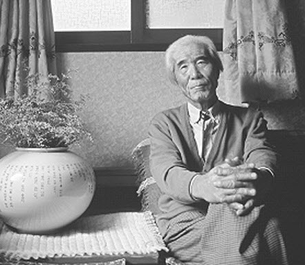
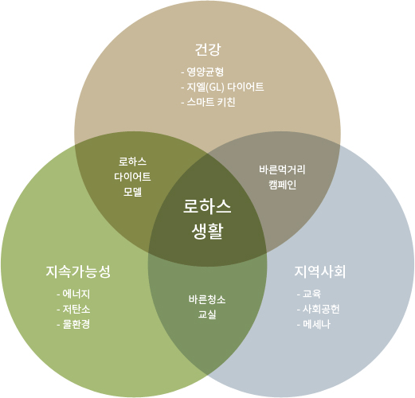

사회공헌활동
(Corporate Philanthropy)
- 건강(Health)
- 바른먹거리 캠페인 교육
- 로하스 식생활 교육
- 지속가능성(Sustainability)
- 물환경(Project Wet) 교육
- 바른청소교실
- 지역사회(Community)
- 로하스 디자이너 봉사단
- 풀무원 조직원 기부활동
- 메세나(Mecenat)
- 김치학교 사업
- 국악공연 지원


'이웃사랑', '생명존중' 정신으로 사회적 역할과 책임을 수행합니다.

풀무원은 인간의 건강과
지구 환경의 지속가능성을 추구하며
로하스 생활(LOHAS Living)을
구현하는 데 앞장섭니다.
풀무원 정신의 시작인 농부이자 평화주의자 원경선은 세계의 기아 문제에 관심을갖고 돕기 시작한 최초의 한국인입니다. 아흔이 넘어서까지 풀무원 신입사원 교육에 강사로 참여했던 원경선은 강의 때마다 풀무원이라는 이름을 걸고 해야 할 일과 하지 말아야 할 일을 조근 조근 일러주었습니다.
언제나 풀무원이 해야 할 일은 이웃을 사랑하고 생명을 존중하는 일.
풀무원은 이웃사랑과 생명존중 정신을 바탕으로
사회적 역할과 책임을 성실히수행하기 위해 노력합니다.
인간의 건강과 지구 환경의 지속가능성을추구함으로써
로하스 생활을 구현하고 지속가능한 기업이 되고자 합니다.
언제나 풀무원이 해야 할 일은
이웃을 사랑하고 생명을 존중하는 일.
풀무원은 이웃사랑과 생명존중 정신을
바탕으로 사회적 역할과 책임을 성실히
수행하기 위해 노력합니다.
인간의 건강과 지구 환경의 지속가능성을
추구함으로써 로하스 생활을 구현하고
지속가능한 기업이 되고자 합니다.

건강한 몸과 마음은 행복한 삶의 기본입니다.
건강한 내가 모여 건강한 공동체를 만들고, 긍정적이고 선한 세상을 앞당깁니다.
풀무원은 ‘내 가족의 건강과 행복을 위한 바른먹거리’, 내 몸과 자연을 모두 건강하게 하는 ‘로하스 식생활’을 통해 건강한 나를 찾도록 돕습니다.
풀무원 홈페이지 ‘생산이력 정보 시스템’에서 풀무원 두부와 콩나물 제품 패키지에 적힌 바코드 숫자를 입력하면 해당 제품별 콩의 산지와 품종, 수매 일자 등 원료의 보관 단계부터 제품을 생산하여 유통하기까지의 모든 과정을 직접 확인할 수 있습니다. 내가 먹는 식품이 무엇으로, 언제, 어떻게 만들어졌는지 제품에 대한 소비자의 알 권리를 충족시키기 위해 풀무원이 스스로 만든 제도입니다.
로하스 식생활은 ‘지엘 다이어트(GL Diet, 당 흡수를 줄이는 식생활)’로 실천할 수 있습니다. 그렇다면 무엇을, 얼마나, 어떻게 먹어야 ‘지엘 다이어트’를 실천할 수 있을까요? 풀무원 계열의 생활서비스 전문기업 이씨엠디의 스마트 키친에서는 영양 균형을 꼼꼼히 맞춘 안심하고 먹을 수 있는 바른먹거리와 함께 바른 식습관을 조언합니다.
어렸을 때 입맛이 평생 건강이 됩니다. 풀무원은 바른먹거리를 만드는 일 못지않게 바른먹거리의 중요성을 널리 알리고 바른 식습관을 교육하는 일이 식품회사의 중요한 사회적 책임이라고 생각합니다. 바른먹거리 캠페인은 2010년 어린이 스스로 자신이 먹는 음식이 ‘어디서, 어떻게, 누구에 의해 만들어졌는지’를 알고 바른먹거리를 선택해 먹는 힘을 길러주기 위해 시작된 교육 캠페인입니다. 학부모와 교사들의 전폭적인 지지를 받으며 성인에게까지 확대되고 있으며, 2015년부터는 ‘건강에 좋은 것이 곧 환경에도 좋다’는 풀무원의 로하스적 가치가 담긴 로하스 식생활 교육이 더해졌습니다.
오곡과 퀴노아 등 영양이 풍부한 곡류를 원재료로 한 묵, 밀가루 0%를 구현한 파스타, 쌀국수, 냉면 제품과 단백질 함량을 높인 두부, 나트륨 함량을 낮춘 김치 등 건강한 원료로 영양 균형까지 고려한 바른먹거리 제품을 개발해 선보입니다.
하나도 숨김이 없어야 진짜 바른먹거리입니다. 풀무원은 우리가 만든 식품에 대해 올바른 정보를 제공할 의무가 있고, 소비자는 제대로 알고 스스로 제품을 선택할 권리가 있습니다. 암호 같은 전문용어만이 나열된 원재료 표기로는 진정한 정보의 공유가 이루어질 수 없다고 믿기에 풀무원은 누구나 쉽게 찾고, 쉽게 읽고, 쉽게 이해할 수 있는 표기법으로 제조에 사용한 식품첨가물의 이름을 모두 공개합니다.
건강에 좋은 것이 환경에도 좋습니다. 생활습관병 예방과 건강을 위해, 환경을 위해 풀무원은 ‘로하스 다이어트 모델’을 제안합니다. 건강과 환경의 지속가능성을 함께 높이는 ‘로하스 다이어트 모델’은 건강에 좋은 식품이 지구 환경에 미치는 영향 또한 긍정적이라는 점을 확인하고 실천할 수 있도록 만들어졌습니다.